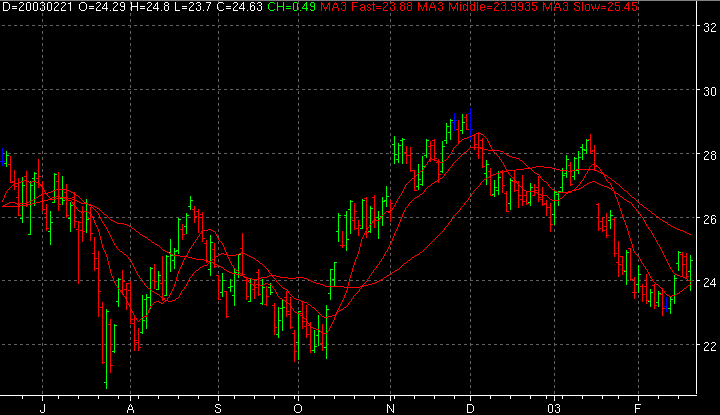

3 Plot Moving Average - MA3

Parameters:
- Fast Input - The data field the fast MA is based on
- Fast Color - Fast MA color
- Fast Line Type - Fast MA line type
- Fast Label - The text to identify the fast MA plot
- Fast Period - The period used for the fast MA
- Fast Type - The type of MA to use
- Middle Input - The data field the middle MA is based on
- Middle Color - Middle MA color
- Middle Line Type - Middle MA line type
- Middle Label - The text to identify the middle MA plot
- Middle Period - The period used for the middle MA
- Middle Type - The type of MA to use
- Slow Input - The data field the slow MA is based on
- Slow Color - Slow MA color
- Slow Line Type - Slow MA line type
- Slow Label - The text to identify the slow MA plot
- Slow Period - The period used for the slow MA
- Slow Type - The type of MA to use
Description:
Alerts:
True